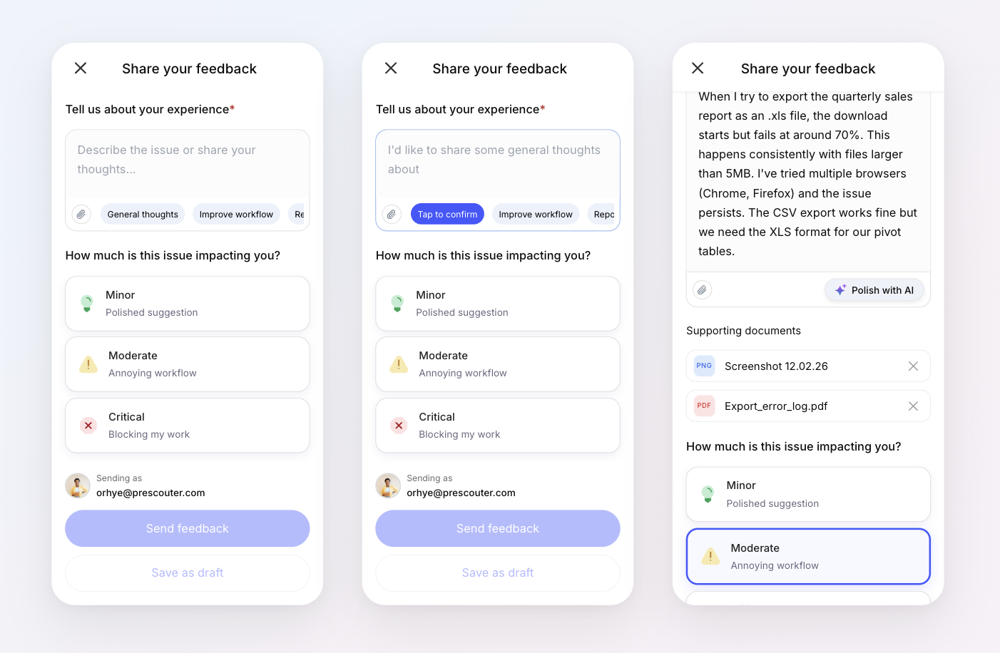

Smarter Feedback Collection
Using AI to help users articulate feedback with smart categorization and severity tagging
Context
We launched our platform to a small group of enterprise users and needed a way to collect meaningful feedback. The challenge? We had no idea what kind of feedback they'd share — it could be anything from a minor UI suggestion to a critical workflow blocker.
We needed a feedback experience that was fast, low-friction, and helped users articulate their thoughts clearly — even when they didn't know where to start.
The Problem
Users struggle to write useful feedback. They either leave vague comments ("it's confusing"), over-explain with walls of text, or abandon the form entirely. For our team, this meant low-quality signal that was hard to act on.
We asked ourselves: How might we reduce the effort of giving feedback while increasing its clarity?
The Solution
A feedback modal enhanced with AI-powered features that guide users from a blank page to a well-structured submission — in seconds.
Three key design decisions:
- Smart category chips to eliminate the blank-page problem
- AI text polishing to turn rough thoughts into clear feedback
- Impact severity cards to help prioritize without complicated forms
Walkthrough
1. Starting Point – Eliminating the Blank Page
Share your feedback
What's on your mind? Share a thought, suggestion, or issue.

When the modal opens, users see three chips: General thoughts, Improve workflow, and Report a bug. These aren't just labels — hovering over a chip previews suggested text directly in the textarea. Nothing is committed until the user clicks.
Why this matters: It removes the anxiety of a blank textarea. Users can explore categories before committing, lowering the barrier to start writing.
2. Polish with AI – From Rough to Ready
Share your feedback
What's on your mind? Share a thought, suggestion, or issue.
Once a user starts typing, the category chips disappear and a “Polish with AI” button appears. Users can type just a few rough words and let AI expand them into clear, structured feedback.
Designing for latency: AI processing isn’t instant, so we used a spinner and a reassuring “Polishing…” message to set expectations and keep users in the flow.
The undo option was non-negotiable: Users need to trust that AI is helping, not overriding. The persistent undo link ensures they always feel in control of their own words.
3. Supporting Documents & Categorizing Impact
Share your feedback
Users can attach files as evidence — screenshots, spreadsheets, logs. The upload state uses green checkmarks for clear confirmation, keeping the experience lightweight.
Rather than a dropdown or radio list, we used visual cards with plain-language subtitles: “Polished suggestion,” “Annoying workflow,” “Blocking my work.” This translates abstract severity into the user’s actual experience — making it faster to choose and more accurate for our team to triage.
Mobile Adaptation

A significant portion of our user base accessed the platform on mobile, so the feedback form needed to work just as well on smaller screens. The core interaction stayed the same, but we adapted key elements for touch: chips use a tap-to-preview, tap-again-to-confirm pattern instead of hover, severity cards stack vertically for easier thumb reach, and the textarea auto-expands as users type to maximize visible space.
The goal was feature parity without compromise — every AI feature available on desktop works identically on mobile.
Results
Within the first 8 weeks of rolling out the redesigned feedback form, we saw a meaningful shift in both the quantity and quality of submissions.
An unexpected insight: roughly 1 in 5 submissions used the “General thoughts” chip, and many of these surfaced feature requests and workflow ideas we hadn’t considered. The open-ended category became an informal discovery channel that directly influenced two items on our next quarter’s roadmap.
Reflection
This project reinforced a principle I keep coming back to when designing AI features: AI should reduce effort, not replace intent. The user always owns their feedback — AI just helps them say it better.
The feedback form was a small surface area, but it touched on big questions: How do you introduce AI into a familiar pattern without making it feel alien? How do you design for trust when the machine is editing someone’s words? These are the kinds of problems I want to keep solving.